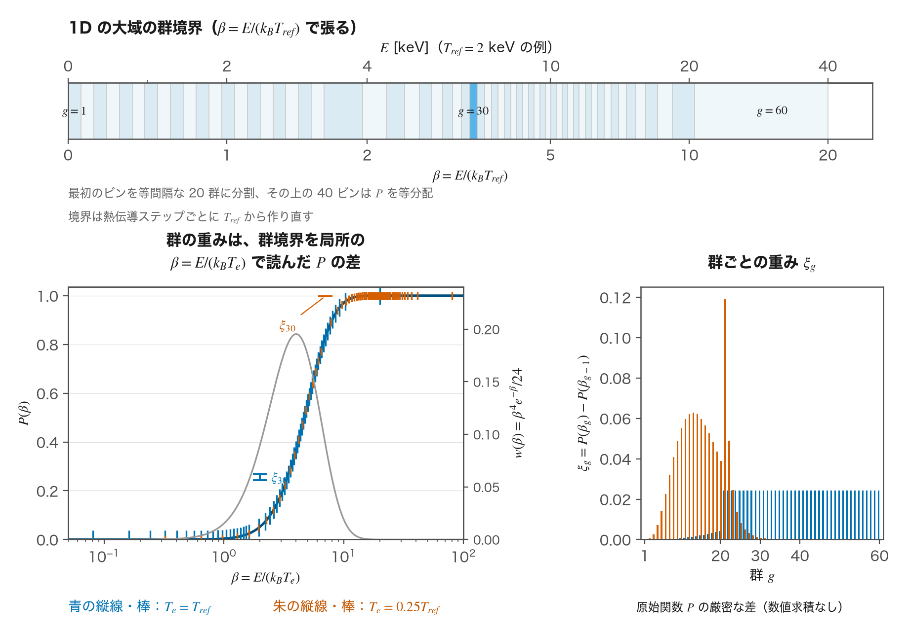
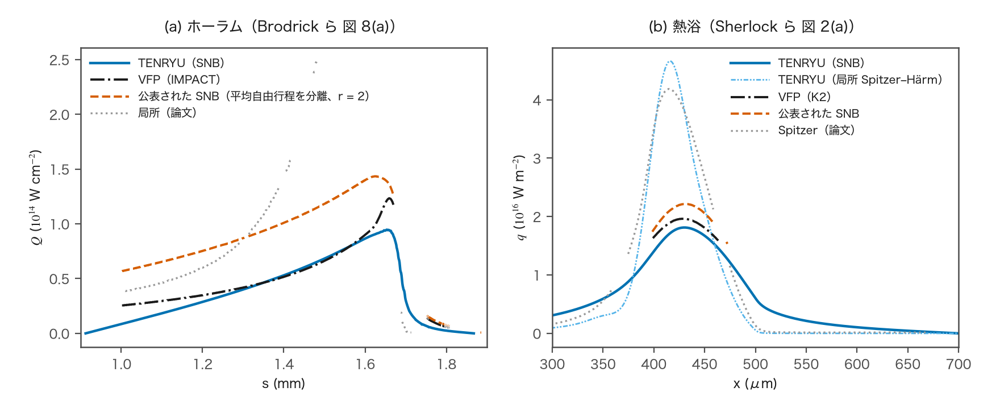
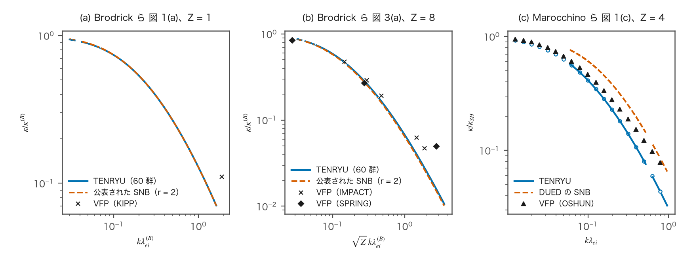

SNB 非局所モデル
SNB（Schurtz–Nicolaï–Busquet）モデルは、電子熱伝導の非局所補正（nonlocal correction）を電子エネルギーの多群（multigroup）で計算する簡約運動論モデル（reduced kinetic model）である。1D の平面・円筒・球で、nonlocal_model="snb" により明示的に有効にする。補正は局所 SH 流束への加算である。1D では、流束制限も伝導率制限も適用しない。時間方向には、Cao らの implicit-SNB（iSNB）ピカール反復（Picard iteration）で連成する。この頁は、群の構成、輸送場の方程式、平均自由行程、補正の手順を述べる。
この計算で使う用語
SNB には、TENRYU の実装に固有の意味で使う語がある。群、群の重み、輸送場、群の平均自由行程、非局所補正、iSNB のピカール反復である。これらをまとめて定義する。
SNB の量
群（group）は、電子のエネルギー \(E\) を区切った区間である。SNB は、エネルギー群ごとに非局所の輸送を解く。1D では、群境界を β=E/(kBTref) で張る。Tref は熱伝導を解くセルにおける、熱伝導ステップ開始時の電子温度 Tn の最大値（除外するセルはSNB の節に示す）である。群数 G は snb_n_groups（既定 60）、低エネルギー側の群数 Gc は snb_n_cold_groups（既定 20）である。後述の累積分布関数（cumulative distribution function）P を βmax=snb_E_max_over_Te（既定 20）まで Nw=G−Gc+1 個の等分配のビンに分け、最初のビン [0, β1] を β に等間隔な Gc 群に分割する。群境界に kBTref を掛けた物理エネルギー Eg を、そのステップのあいだ保持する。群を代表するエネルギーは \(\varepsilon_g=(E_{g-1}+E_g)/2\) である。
群の重み（group weight）\(\xi_g\)は、局所の SH 流束のうち、群 \(g\) の電子が運ぶ割合である（群境界と重みの図は図A）。SH 流束はエネルギーについて \(\beta^4e^{-\beta}/24\)（\(\beta=E/(k_BT_e)\)）の重みをもつので、\(\xi_g=P(\beta_g)-P(\beta_{g-1})\)、\(P(\beta)=1-e^{-\beta}(\beta^4+4\beta^3+12\beta^2+24\beta+24)/24\) と、解析的な累積分布関数の差で決まる（数値求積（numerical quadrature）は使わない）。\(\beta_g=E_g/(k_BT_e)\) は、群境界 \(E_g\) を重みを評価する局所温度（1D では面を挟む 2 セルの平均温度）で規格化した値である。同じ \(E_g\) でも、その温度が低いほど \(\beta_g\) が大きく、重みはエネルギーの小さい群に集まる。平均自由行程の Z 依存補正 \(\xi(Z)\) とは別の量である。
輸送場（transport field）\(H_g\)は、群 \(g\) の電子が非局所に運ぶ熱流束の場である（次元は熱流束）。群ごとに、局所の SH 流束の群配分 \(U_g=\xi_gq_{SH}\) を源泉とする拡散型の方程式（SNB の節）を解いて得る。\(H_g\) は、源泉が群の平均自由行程のスケールで周囲へ広がった分布である。
群の平均自由行程（group mean free path）\(\lambda_g^{abs}\)、\(\lambda_g^{tr}\)は、\(H_g\) の方程式に入る 2 つの長さである。\(\lambda_g^{abs}\)（上付きの abs は吸収）は \(H_g/\lambda_g^{abs}\) の項で、源泉から離れるにつれて \(H_g\) が減る距離を決める。\(\lambda_g^{tr}\)（上付きの tr は輸送）は拡散項の係数 \(\lambda_g^{tr}/3\) で、\(H_g\) が広がる速さを決める。1D では、両者をSNB の節に示す分離した式で定め、snb_mfp は使わない。輸送側だけを短くするオプション snb_efield="local" は、1D で拒否する。
非局所補正（nonlocal correction）\(\delta q\)は、\(H_g\) の勾配から作る熱流束の補正 \(\delta q=-\sum_g(\lambda_g^{tr}/3)\nabla H_g\) である。和 \(q_{raw}=q_{SH}+\delta q\) は、制限を適用しない 1D では流束そのものである。勾配が急な点では \(\delta q\) が SH 流束を減らし（流束抑制）、その前方では熱を運ぶ（予熱）。
iSNB（implicit-SNB）のピカール反復は、非局所補正を時間方向に連成する反復である（Cao らの方法）。1D では、SNB の節に示すように、群の求解を陰的伝導ステップに連成する。
SNB 多群非局所モデル
nonlocal_model="snb" は、1D の平面・円筒・球の電子熱伝導に、明示的に有効化する Schurtz–Nicolaï–Busquet 補正を加える。三重対角系を使う以下の離散化は 1D のものである。1D では、熱伝導ステップごとに前述の群配置を使う。重み \(\xi_g\) の評価では境界を局所温度による \(\beta_g=E_g/(k_BT_e)\) に読み替えて \(P\) を評価する。1D の面では面平均の \(T_e\) を使う。各群では、輸送場 \(H_g\)（次元は熱流束）に対する次の拡散型方程式を解く。右辺の源泉は局所 SH 流束の群配分 \(U_g\) の発散である。源泉として注入された \(U_g\) が平均自由行程のスケールで周囲へ拡散し広がったものが \(H_g\) で、その勾配から後述の非局所補正を再構成する。
ここで \(P(\beta)\) は、Spitzer–Härm 熱流束を規格化電子エネルギーについて累積した分布関数である — 流束は \(\beta^4e^{-\beta}/24\) のスペクトル重みをもち、\(P\) はその積分である。したがって ξg は解析的な原始関数の差であり、数値求積は使わない。補正の総和は \(\delta q=-\sum_g(\lambda_g^{tr}/3)\nabla H_g\) である。1D では、セル中心の Hg を体積積分した有限体積の式は、厳密に対角優位（diagonally dominant）な三重対角系となり、前進消去と後退代入（forward elimination and backward substitution）により面の補正電力を直接求める。吸収項が拡散項に比べて小さい場合にも保持されるよう、行和と非対角の重みを別々に保持する。面の拡散係数は左右の λtr の調和平均を 3 で割った値で、閉じた境界では反射条件（reflecting boundary condition）を課す。

1D では、吸収と輸送の平均自由行程を分離する。
$$ \begin{aligned} \lambda_T&=\frac{(k_BT_e)^2}{4\pi n_e e^4\ln\Lambda},& \lambda_{ei,g}&=\frac{4\lambda_T}{Z^*}\left(\frac{\varepsilon_g}{k_BT_e}\right)^2,\\ \lambda_g^{abs}&=2\lambda_T\left(\frac{\varepsilon_g}{k_BT_e}\right)^2,& \lambda_g^{tr}&=\xi(Z^*)\lambda_{ei,g},\\ \xi(Z)&=\frac{Z+0.24}{Z+4.2}. \end{aligned} $$ここで λT は上式で定める熱的な長さの尺度、λei,g は電子–イオン平均自由行程、εg は群の中点エネルギー、ne は電子数密度、e は電気素量、ln Λ はクーロン対数である。衝突電荷 Z*=〈Z²〉/〈Z〉はセル内のイオン種についての平均で、SH 伝導率と共通である。これは r=2 の分離した平均自由行程の式であり、snb_mfp の明示指定は拒否する。電場オプションは none に限る。
群を代表するエネルギー \(\varepsilon_g=(E_{g-1}+E_g)/2\) は erg で評価する。
1D では snb_efield は "none" に限り、Schurtz らによる輸送平均自由行程の電場補正 "local" は拒否する。1D の r=2 の分離した式は、電場のない試験で定めたものである。
SNB 補正の手順
1D の陰的伝導ステップでは、伝導率、平均自由行程、群のエネルギー、重み、Tref を Tn で固定する。各反復では、直前の非局所補正を右辺に入れた伝導の三重対角系を解く。最初の補正は 0 とする。更新した温度から、各群の前進消去と後退代入によって面の補正電力を直接求め、群の順に加算する。ボイド、電子の体積熱容量 ρCv,e が非正のセル、電子密度 ne が非正のセルを除外する。端面と除外セルに接する面は反射境界とし、除外セルは Hg=0 とする。
$$ \begin{aligned} |D_i^k-D_i^{k-1}|&\le\alpha M_iT_i^k/\Delta t,\\ D_i^k&=P_{sh,R}(T^k)-P_{sh,L}(T^k),\quad M_i=(\rho C_{v,e})_iV_i,\\ r_k&=\max_i\frac{|D_i^k-D_i^{k-1}|\Delta t}{M_iT_i^k}. \end{aligned} $$ここで k は反復番号、i は除外されていないセル、Psh,R と Psh,L はそれぞれ右面と左面の SH 電力、Mi は電子熱容量、Vi は体積、Tik は更新した温度、Δt は伝導の時間間隔である。k=2 から、すべての除外されていないセルでこの不等式を満たせば収束とする。α は snb_iter_alpha（既定 0.01）である。反復上限 snb_iter_max は既定 21、最小 3 である。上限で未収束の場合、rk が rk−1 より小さくなったときだけ受け入れ、未収束のステップとして記録する。それ以外、または温度が非有限の場合は診断を出して停止する。除外されていないセルの Tik が非正または非有限の場合は収束判定を不合格とし、rk = +∞ とするため、その反復結果は受け入れない。SNB 固有の時間刻み制限も流束制限も設けない。
1D の SNB は流束制限も伝導率制限も適用せず、f_lim の明示指定を拒否する。GUI（Studio）が作る SNB のフォームは 1D のみであり、SNB では f_lim を隠して書き出さない。
namelist による制御
以下は Numerics.conduction のうち、非局所モデルのキーである。全項目と検証規則は namelist リファレンスを参照のこと。表の既定値は、デッキで指定しないときの値である。入力検査は、nonlocal_model="snb" に対し、1D では 1D_SPH であることと solver="implicit" を要求する。共通の要求は、2 温度モデルであること、conduction.enabled=True であること、材料別の保存モードが無効であることである。
| キー | 1D の既定値 | 用途 |
|---|---|---|
nonlocal_model | "none" | "none"、または 1D の "snb"。Studio が書くのは 1D だけである。 |
snb_n_groups | 60 | SNB のエネルギー群数 G。2 以上で、1D では Gc より大きい。 |
snb_E_max_over_Te | 20 | 規格化エネルギーの上端。1 より大きい。1D は P の等分配ビンの最初を細分する。 |
snb_efield | "none" | 1D では "none" に限り、"local" は拒否する。 |
snb_n_cold_groups | 20 | 1D の低エネルギー側の群数 Gc。1 以上 G−1 以下。 |
snb_iter_max | 21 | 1D の陰的伝導の反復上限。3 以上。 |
snb_iter_alpha | 0.01 | 1D のセルごとの収束判定の許容値 α。正の値。 |
検証
1D の試験は、モデルを閉じた形の解および Brodrick ら（2017）[6]、Sherlock ら（2017）[3]、Marocchino ら（2013）[5] の公表結果と比較し、以下の値は 2026-11-09 の検証実行の値である。
- 線形応答（
snb1d_planar_response）：電子温度の微小な正弦波摂動に対し、SNB 熱流束と局所 Spitzer–Härm 熱流束の比 R を、60 エネルギー群のモデルの閉じた形の応答 Rh と比較する。846 ケースはイオン電荷数 Z = 1 と Z = 8、平均電荷数 Z̄ = 4 の混合物と、1e-3 から 1.627 までの kλei を覆う。k は摂動の波数、λei は Brodrick ら [6] が式 2 で定義する電子・イオン平均自由行程である。|R − Rh| の最大値は、許容値 1e-5 に対して 2.73e-7 である。同じ格子上でセルの値の順序を反転しても応答 R′ は同じで、補正の符号は反転する。|R′ − Rh| の最大値は 2.73e-7 である。 - 曲線座標と不等間隔格子（
snb1d_curvilinear_order）：平面・円筒・球の幾何形状と、等間隔・不等間隔の格子を 24 ケースで検査する。閉じた形の解に対する誤差はセル幅の二乗に比例して減少する。観測した収束次数は、要求値 1.8 以上に対して 1.967 から 2.002 である。 - エネルギー群（
snb1d_group_convergence）：60 群の応答 Rh,G を、適応求積（adaptive quadrature）で求めた連続体の応答 R∞ と、Brodrick らの図 1 [6] の 834 点で比較する。|Rh,G/R∞ − 1| の最大値は 6.64e-3 であり、各点の許容値に対する比は最大 0.901 である。許容値は公表曲線を数値化するときの相対的な読み取り不確かさ（relative digitization uncertainty）である。応答の小さな波数に対する展開の係数 bo は、bo = ∫060 (16ξβ4/(27π)) dP として評価する。β は電子エネルギーをエネルギー単位の基準温度で割った値、P は源のスペクトルの累積積分、ξ は電荷数に依存する補正係数である。この積分は論文の閉じた形の式と一致し、相対差は Z = 1 で 0、Z = 8 で 4.4e-16 である。論文の表 II [6] はこの係数を 633.8ξ/r として示している。r は平均自由行程の係数であり、ここでは r = 2 である。計算した係数は、印刷された 4 桁でこの式と一致する。Z = 1 と Z = 8 で評価すると、表の式はそれぞれ 75.5685 と 214.0374 を与え、計算値はそれぞれ 75.5673 と 214.0341 である。 - 公表された SNB・VFP 曲線（
snb1d_brodrick_fig1）：Brodrick らの図 1(a) [6] の SNB 曲線（Z = 1）で使用した 834 点において、曲線の読み取り不確かさを単位とする偏差の最大値は、R∞ で 0.501、60 群で 0.930 である。この不確かさが許容値である。平均自由行程の係数 r を 2 から 3 に変えると、不合格となるべき 420 点すべてで比較が不合格となる。図 3(a) [6] の Z = 8 の曲線との比較と、VFP（Vlasov–Fokker–Planck）曲線からの偏差は、合否を判定せずに記録する。図 3(a) における偏差の最大値は、読み取り不確かさを単位として R∞ で 2.79、60 群で 2.82 である。（VFP との比較） - ホーラムの分布（
snb1d_brodrick_hohlraum）：Brodrick らのホーラム（hohlraum）の分布 [6] における熱流束を、VFP コード IMPACT と比較する。IMPACT に対するピーク値の相対偏差 d = 0.2327 は、公表された SNB 結果自体の相対偏差 dpub = 0.1628 に、読み取りと入力の不確かさを加えた上限 0.6283 以下でなければならない。熱流束のピーク値は 9.466e20 erg s−1 cm−2、IMPACT は 1.2337e21 erg s−1 cm−2、公表された SNB は 1.4345e21 erg s−1 cm−2 である。（VFP との比較） - 熱浴（
snb1d_sherlock_heat_bath）：Sherlock らの熱浴（heat bath）の問題 [3] の熱流束のピーク値 qpeak を、VFP コード K2 と比較する。ピーク値は 1.8127e19 erg s−1 cm−2、K2 は 1.9619e19 erg s−1 cm−2、公表された SNB は 2.2155e19 erg s−1 cm−2 である。K2 に対するピーク値の相対偏差 d = 0.0760 は、公表された SNB 結果自体の偏差と読み取りの不確かさから同様に作る上限 0.1567 以内である。（VFP との比較） - 反復（
snb1d_iteration_decay）：各時間刻みで測定した温度モードの減衰は、反復して解く陰的な時間刻みの閉じた形の増幅率と一致する。相対差の最大値は、上限 1e-5 に対して 5.7e-8 である。 - Marocchino ら（2013）の記録（
snb1d_marocchino_fig1_record、snb1d_marocchino_fig3_record）：線形応答では、Marocchino らの図 1(c) [5]（Z = 4）の公表曲線からの偏差を記録する。ホットスポットの問題では、公表曲線とは比較せず、温度と熱流束を論文の記述と並べて記録する。どちらの記録にも合否の判定はない。（VFP との比較） - 保存・再現性と統合した計算の再実行：
snb1d_iteration_decay、snb1d_sherlock_heat_bath、snb1d_marocchino_fig3_recordで伝導の処理を直接呼ぶたびに、算術誤差の上限内でエネルギー収支が閉じる。スクリプトtests/coupling/snb1d/run_checks.shは、繰り返し実行、再開、MPI の 1・2・4 ランクでの実行がビット単位で一致することを比較し、統合した計算を再実行する。12 ns の球対称爆縮デッキexamples/implosion/gxii_square_240J_12ns_fld_nr450.py（450 セル）の後期のチェックポイントから SNB を 1 時間刻み進める計算は、2 回の反復で受理された。 - 不変条件の単体試験：一様温度で補正が厳密にゼロであること、源のスペクトルと群の求解を少なくとも 1024 ビット演算の参照値と比較すること、融合積和演算（fused multiply-add）の縮約を無効にしても結果が同じであること、停止規則、小さな格子、1D での平均自由行程リミッタの拒否を検査し、すべて合格した。
VFP との比較
VFP（Vlasov–Fokker–Planck）コードは、電子の分布関数（distribution function）の運動論方程式（kinetic equation）を直接解く（Brodrick ら [6] p. 3）。SNB は分布関数を解かずに非局所熱流束を近似する。Brodrick ら [6]、Sherlock ら [3]、Marocchino ら [5] は、SNB を VFP コードと比較して検証した。TENRYU の 1D SNB も同じ問題で同じ VFP 結果と比較する。VFP 結果は再計算せず、論文の図の曲線と点を数値化する。各読み取り値には、線幅と描画解像度による読み取り不確かさがある。VFP コードは Brodrick らの IMPACT、KIPP、SPRING、Sherlock らの K2、Marocchino らの OSHUN である。
ホーラムの問題は、Brodrick ら [6] pp. 11–12、図 7(a)、8(a) による。Brodrick らは、ヘリウムガスを充填したガドリニウム製ホーラムを HYDRA コードで 1D 球対称形状としてレーザー加熱し、20 ns の電子温度 Te、電子数密度 ne、電荷数 Z の分布を平面形状の IMPACT 計算の初期条件に用いた。ヘリウムとガドリニウムの界面付近の約 100 μm で、プラズマは Te = 2.5 keV、ne = 5e20 cm−3、Z = 2 から、Te = 0.3 keV、ne = 5e21 cm−3、Z = 39 へ変化する。クーロン対数 ln Λ は 2.1484 に固定される。論文の図 8(a) は、IMPACT を 5 ps 進めた後の Te 分布で求めた SNB 熱流束を IMPACT と比較する。TENRYU は図 7(a) の線から、その Te と、IMPACT では変化しない ne、Z を読み取る。3 本の線すべてが描かれた s = 0.912–1.868 mm を、幅 0.999 μm の等間隔な 956 セルに配置する。s は論文の図の位置座標である。平面形状、両端の反射境界、ln Λ = 2.1484 のもとで、この状態の SNB 流束を 1 回評価し、時間発展は行わない。
熱浴の問題は、Sherlock ら [3] p. 3、図 2(a) による。初期温度は x < 400 μm で T = 1000 eV、その先の 100 μm で線形に 100 eV まで下がり、領域の長さは 700 μm である。ne = 2.47e20 cm−3（2.47e26 m−3）、Z = 50、ln Λ = 7.1 を固定し、論文の図 2(a) は 10 ps の熱流束を示す。TENRYU は幅 1 μm の 700 セルと両端の反射境界を使い、電子温度だけを熱伝導で時間発展させる。流体運動、輻射、電子・イオン間のエネルギー交換は含めない。Sherlock らもこの問題ではこれらを挙げていない。等しい 540 時間刻みで 10 ps まで進め、その状態の SNB 流束を求める。
ピーク熱流束の合否は次式で判定する。
$$ \begin{aligned} d &\le d_{pub}+(1+d_{pub})\,(\delta_{SNB}+2\,\delta_{VFP}+\delta_{in}),\\ d &=\left|q_{peak}/q_{peak,VFP}-1\right|,\qquad d_{pub}=\left|q_{peak,pub}/q_{peak,VFP}-1\right|. \end{aligned} $$ここで qpeak は TENRYU のピーク熱流束、qpeak,VFP は読み取った VFP 曲線のピーク、qpeak,pub は公表 SNB 曲線のピークである。d と dpub は、それぞれ TENRYU と公表 SNB の VFP に対するピークの相対偏差である。δSNB と δVFP は、それぞれ公表 SNB 曲線と VFP 曲線のピークにおける相対的な読み取り不確かさである。δin は、ホーラムの入力分布 Te、ne、Z の読み取り不確かさによる TENRYU のピークの相対変化を、下記の一次近似と帯の上下端での評価から見積もる量である。
この規則は、各論文が自身の SNB と VFP のピークのずれを一致として示した検証に従う。Brodrick らはピーク熱流のずれが 16 % 以内と述べる（[6] p. 12）。Sherlock らは、Spitzer に対するピークの特徴的な低減について妥当な一致があると述べる（[3] p. 3）。TENRYU の VFP からの偏差が、読み取り不確かさを考慮した公表 SNB の偏差を超えないときに合格とする。
2δVFP は、VFP の読み取りが d と dpub の両方に入ることによる。係数 1 + dpub は、相対的な読み取り誤差が、大きさ約 1 + dpub のピーク比に掛かることによる。
入力の不確かさには δin = max(δlin, δenv) を使う。δlin は、各線の読み取り帯に収まり、読み取り位置の量子化誤差と、線の連続部分での隣接セル間の変化に対する制約を満たす入力分布について、ピークの相対変化の上限を一次近似で求めた値である。局所感度（local sensitivity）は、1 セルの入力値だけを微小に動かしたときの流束の変化率から求める。δenv は、各入力を帯の上端または下端に置き換えたときのピークの変化のうち大きい方を、3 入力について加えた値である。熱浴の入力は論文本文に印刷された数値なので、δin = 0 である。
| 量 | ホーラム | 熱浴 |
|---|---|---|
| VFP コード | IMPACT | K2 |
| qpeak | 9.466e20 | 1.8127e19 |
| qpeak,VFP | 1.2337e21 | 1.9619e19 |
| qpeak,pub | 1.4345e21 | 2.2155e19 |
| d | 0.2327 | 0.0760 |
| dpub | 0.1628 | 0.1292 |
| δSNB | 4.15e-3 | 7.43e-3 |
| δVFP | 4.82e-3 | 8.44e-3 |
| δin | 0.3866（δlin；δenv = 0.0950） | 0 |
| 上限（右辺） | 0.6283 | 0.1567 |
| 判定 | 合格 | 合格 |
ホーラムは δin を含めた場合にだけ合格する。δin を除くと上限は 0.179 であり、d = 0.2327 はこれを超える。δenv の各入力の変化は、帯の上端、下端の順で、Te が 6.0e-3、4.5e-3、ne が 3.16e-2、3.16e-2、Z が 5.75e-2、4.67e-2 である。セル数を 1912 に倍増するとピークは 5.8e-4 変化する。領域を ne の線の終端 1.883 mm まで延長し、971 セルとし、Te と Z を各線の最後の値で保持すると、変化は 3.1e-4 である。どちらも δSNB/2 = 2.07e-3 以内である。

図Bの TENRYU のピークは VFP より低く、IMPACT の 0.767 倍、K2 の 0.924 倍である。公表 SNB のピークは VFP より高く、それぞれ 1.163 倍、1.129 倍である。TENRYU のピークは公表 SNB の 0.660 倍、0.818 倍である。
ホーラムの領域は TENRYU の試験で定義する。Brodrick らはこれらの領域を定義していない。qIMPACT は IMPACT の熱流束、qpeak,IMPACT はそのピークである。ガス充填部（gas fill）は、Z < 3 のセル同士の面（ヘリウムは Z = 2）のうち、qIMPACT ≥ 0.01 qpeak,IMPACT を満たす面である。予熱部（preheat）は、IMPACT のピークよりガドリニウム側（Z が大きい側）にあり、0.01 qpeak,IMPACT ≤ qIMPACT ≤ qpeak,IMPACT/2 を満たす面である。q は各 SNB の熱流束であり、q/qIMPACT の中央値は、ガス充填部では TENRYU が 0.954、公表 SNB が 2.074、予熱部では 0.443、1.217 である。Brodrick ら [6] p. 12 は、ガス充填部の熱流がなお約 2 倍大きいことと、予熱を非常によく予測することを述べている。
モデルには既知の違いがあるが、これらの差への影響は確かめていない。両論文の SNB は電場によって平均自由行程を補正する（Brodrick ら [6] 式 19、p. 6；Sherlock ら [3] pp. 7–8）。TENRYU の 1D SNB はこの補正を行わない（snb_efield="none"）。Sherlock らの SNB は平均自由行程の幾何平均（geometric mean）を使う（[3] p. 3）。TENRYU は Brodrick らの分離した曲線と同じく、平均自由行程を分離する。Brodrick ら [6] p. 12 は、幾何平均が有効なのは電離状態が一様な場合だけと述べている。
熱浴では、TENRYU の 10 ps の状態における局所 Spitzer–Härm 流束は、416 μm でピーク 4.663e16 W m−2 をとる。論文の Spitzer 曲線のピークは約 4.2e16 W m−2 である。論文は Spitzer 曲線をどの温度分布で計算したかを述べていないため、両者は比較しない。
線形応答の VFP との比較
線形応答（linear response）の問題は、一様プラズマの電子温度に微小な正弦波摂動（sinusoidal perturbation）を与えるものである。論文は有効熱伝導率（effective thermal conductivity）と局所熱伝導率の比を示す。Brodrick らは κ/κ(B) を kλ(B)ei に対して示し、κ(B) は Braginskii の無次元の局所熱伝導率である（[6] 式 1、p. 2）。Marocchino らは κ/κSH を kλei に対して示し、κSH は Spitzer–Härm 熱伝導率である。上の検証一覧で定義した SNB と局所 Spitzer–Härm の流束比 R をこれらの比と比較する。k と λei も同一覧の定義を使い、λ(B)ei は Brodrick らの表記である。

Brodrick らの図 3(a) の横軸は、論文では kλ(B)ei と印刷されている（[6] p. 8）。TENRYU はこの横座標 x を √Z kλ(B)ei と読み、kλ(B)ei = x/√8 で応答を評価する。印刷どおりに読むと、連続体の応答 R∞ は公表 SNB 曲線を 29–81 % 下回る。√Z kλ(B)ei と読むと、R∞ は 0.6–5.8 %、60 群の応答 Rh,G は 0.15–5.8 % 上回る。印刷どおりの読み方は、論文自身の流体力学的極限（hydrodynamic limit）の展開（式 23、展開係数 b は表 I の b(8) = 157）と一致しない。x = 0.02763 の SPRING の点は 0.846 であり、1 − b x2 は 0.880（√Z を含めた読み方）、1 − 8 b x2 は 0.041（印刷どおりの読み方）となる。論文は √Z で規格化した横軸を定義していないため、図 3(a) は合否を判定せず記録する。
図 3(a) の公表 SNB 曲線の読み取り不確かさを単位とする偏差の最大値は、R∞ で 2.79、60 群で 2.82、中央値はそれぞれ 1.92、1.96 である。合否を判定するのは図 1(a) との比較であり、上の一覧に示した。図 1(a) の KIPP の点は κ/κ(B) = 0.111 である。SNB が運動論の結果から離れ始める 0.2 未満にあるため（Brodrick ら [6] p. 8）、この点の偏差は記録しない。
次の表は、図 3(a) の κVFP/κ(B) ≥ 0.2 の VFP 点を示す。κVFP は VFP の有効熱伝導率である。R∞ と Rh,G は上の一覧の連続体と 60 群の応答、RVFP は VFP 点の比、Rpub は横座標 x における公表 SNB 曲線の値である。
| コード | x = √Z kλ(B)ei | |R∞ − RVFP| | |Rh,G − RVFP| | |Rpub − RVFP| |
|---|---|---|---|---|
| IMPACT | 0.1462 | 0.0101 | 0.0105 | 0.0211 |
| IMPACT | 0.2967 | 0.0228 | 0.0228 | 0.0313 |
| SPRING | 0.0276 | 0.0530 | 0.0478 | — |
| SPRING | 0.2767 | 0.0153 | 0.0154 | — |
「—」は、その位置に読み取った公表曲線の値がないことを示す。0.0276 は最初の点 0.0319 より左にあり、0.2767 は曲線が記号と重なって数値化しなかった 0.265–0.296 にある。2 つの IMPACT 点では、TENRYU はどちらも公表 SNB 曲線より IMPACT に近い。
Marocchino らの図 1(c) は Z = 4、n = 1e23 cm−3、基準温度 T0 = 307 eV の問題である（[5] pp. 4–5）。曲線の値 Rcurve に対する TENRYU の応答の相対偏差 R/Rcurve − 1 は、OSHUN の 19 点で中央値 −0.108、範囲 −0.445 から −0.028、DUED-SNB の 812 点で中央値 −0.408、範囲 −0.498 から −0.245 である。読み取り不確かさを単位とする符号付き偏差は、OSHUN で絶対値最大の値が −4.57（中央値 −1.14）、DUED-SNB で −16.8（中央値 −14.5）である。TENRYU はどちらの曲線も下回る。DUED の SNB との差の原因は確かめていない。
比較しなかった結果
- Brodrick ら [6] 図 5（密度と電離状態が一様）は、入力分布が公表されていない（p. 10）。
- Marocchino ら [5] 図 1(a)、(b)（Z = 1、2）は、図の軸から値への変換（較正、calibration）が検査に合格しなかったため、比較用に数値化していない。
- Marocchino ら [5] 図 3 のホットスポット（hot spot）は、公表曲線を使わず、電子・イオン衝突時間（electron–ion collision time）の 2 倍と 30 倍の時刻の温度 T と熱流束 q を、論文の記述（p. 6）と並べて記録する。図の 1–3 行目は較正の検査に合格せず、4 行目は TENRYU の 1D SNB が省略する電場である。
参考文献
- E. M. Epperlein and R. W. Short, "A Practical Nonlocal Model for Electron Heat Transport in Laser Plasmas," Phys. Fluids B 3, 3092–3098 (1991). doi:10.1063/1.859789
- G. P. Schurtz, Ph. D. Nicolaï, and M. Busquet, "A Nonlocal Electron Conduction Model for Multidimensional Radiation Hydrodynamics Codes," Phys. Plasmas 7, 4238–4249 (2000). doi:10.1063/1.1289512
- M. Sherlock, J. P. Brodrick, and C. P. Ridgers, "A Comparison of Non-Local Electron Transport Models for Laser-Plasmas Relevant to Inertial Confinement Fusion," Phys. Plasmas 24, 082706 (2017). doi:10.1063/1.4986095
- D. Cao, G. Moses, and J. Delettrez, "Improved Non-Local Electron Thermal Transport Model for Two-Dimensional Radiation Hydrodynamics Simulations," Phys. Plasmas 22, 082308 (2015). doi:10.1063/1.4928445
- A. Marocchino, M. Tzoufras, S. Atzeni, et al., "Comparison for Non-Local Hydrodynamic Thermal Conduction Models," Phys. Plasmas 20, 022702 (2013). doi:10.1063/1.4789878
- J. P. Brodrick, R. J. Kingham, M. M. Marinak, et al., "Testing Nonlocal Models of Electron Thermal Conduction for Magnetic and Inertial Confinement Fusion Applications," Phys. Plasmas 24, 092309 (2017). doi:10.1063/1.5001079